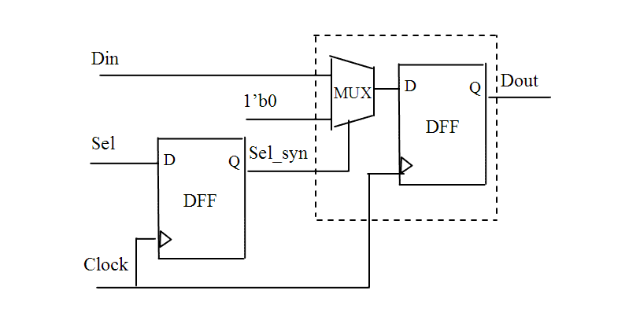
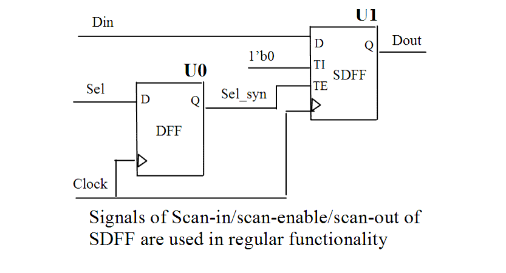

| Description | Using DFT functionality (e.g., scan in, scan enable, or scan out pins) for functional use may prevent the scan insertion tool (or the synthesis tool if it also inserts scan circuitry) from inserting test logic. |
| Policy | DESIGN |
| Ruleset | DFT |
| Language | VHDL/Verilog |
| Type | Hardware |
| Severity | Error |
This is an example of invalid Verilog code, followed by a circuit diagram that illustrates the problem:
wire Sel_syn;
parameter
CLEAR = 1'b1;
PASS = 1'b0;
always @(posedge Clock)
Sel_syn <= Sel;
always @(posedge Clock)
case (Sel_syn)
CLEAR : Dout <= 1'b0;
PASS : Dout <= Din;
endcase
...

Following is the related gate-level design, but using scan cells to realize some functions that are not for DFT. For example, use SDFF for MUX & DFF, or use TE for a functional enable or select signal.
... DFF U0 (.Q(Sel_syn), .D(Sel), .CP(Clock)); //SDFF - scan cell SDFF U1 (.Q(Dout), .D(Din), .CP(Clock), .TI(1'b0), .TE(Sel_syn)); ...
